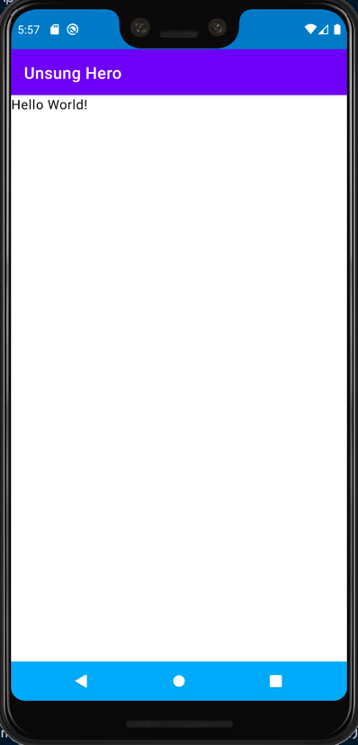
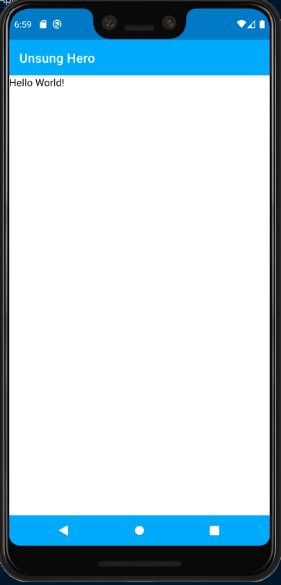
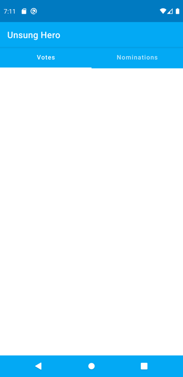
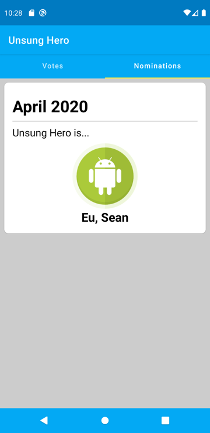
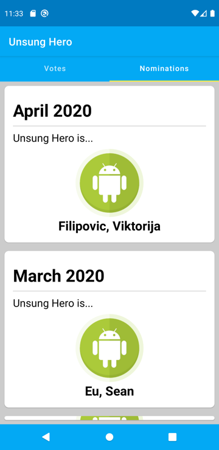

Download the Canary Build of Android Studio from the following link:
https://developer.android.com/studio/preview
Install Android Studio Canary. Note that this will be a separate app if you already have the regular Android Studio installed.
Open the Unsung Hero android project in Android Studio Canary.
Make sure that we are working on the develop branch.
Open build.gradle for the module
Change the minSdkVersion from 16 to 21
defaultConfig {
applicationId "com.example.unsunghero"
minSdkVersion 21
targetSdkVersion 29
versionCode 1
versionName "1.0"
testInstrumentationRunner "androidx.test.runner.AndroidJUnitRunner"
}
Sync the project when told so by Android Studio.
Note: If you want to skip this, checkout the branch jetpack-compose-setting-up.
In your build.gradle of the project, add a varible for Jetpack Compose version to use.
ext {
...
compose_version = '0.1.0-dev13'
...
}
Add the following dependencies in your build.gradle (module) file.
implementation "androidx.ui:ui-layout:$compose_version"
implementation "androidx.ui:ui-material:$compose_version"
implementation "androidx.ui:ui-tooling:$compose_version"
implementation "androidx.ui:ui-livedata:$compose_version"
Inside android block of you build.gradle (module) file, add the following block:
buildFeatures {
compose true
}
Sync the project when told so by Android Studio.
Delete Fragment-Related Files
I am receiving an error when building the project, specifically in the code generation phase. It seems that Fragments and Android Compose does not currently play well together. Since we are not needing the fragments anymore and will do all the UI via Compose, we can delete the following files:
NominationFragment.ktPlaceholderFragment.ktSectionsPageAdapter.ktFragmentModule
After the deletion, modify ApplicationComponent.kt and remove the line
FragmentModule::class,
In NominationActivity.kt, comment out the lines
binding = DataBindingUtil.setContentView(this, R.layout.activity_nomination)
binding.viewPager.adapter = SectionsPagerAdapter(this, supportFragmentManager)
binding.tabs.setupWithViewPager(binding.viewPager)
You should now be able to build the project successfully (you may receive some warnings but we can ignore them).
If you followed along with the previous step and your project can be built without errors, please proceed. Otherwise, please checkout the branch jetpack-compose-setting-up and build the project.
In this step, we will create a simple Composable.
Add a new class named UnsungHeroApp inside the view package.
package com.zuhlke.unsunghero.view
import androidx.compose.Composable
import androidx.ui.foundation.Text
@Composable
fun UnsungHeroApp() {
Text("Hello World!")
}
In NominationActivity.kt, replace the code with the following:
package com.zuhlke.unsunghero.view.nomination
import android.os.Bundle
import androidx.ui.core.setContent
import com.zuhlke.unsunghero.databinding.ActivityNominationBinding
import com.zuhlke.unsunghero.view.UnsungHeroApp
import com.zuhlke.unsunghero.view.commons.BaseActivity
class NominationActivity : BaseActivity() {
private lateinit var binding: ActivityNominationBinding
override fun onCreate(savedInstanceState: Bundle?) {
super.onCreate(savedInstanceState)
setContent {
UnsungHeroApp()
}
}
}
Build the project and run the app. You should now see the app showing the first composable.

We can preview the composed UI by creating a dummy composable annotated with @Preview annotation. In the file UnsungHeroApp.kt where we defined the UnsungHeroApp composable, add another composable:
import androidx.ui.tooling.preview.Preview
...
@Preview
@Composable
fun UnsungHeroAppPreview() {
UnsungHeroApp()
}
The moment you add it, a preview of the UI will be shown to you. Be sure that the editor is set to Split mode. Before you can preview it, you need to build the project first.
Note that if the preview still doesn't show, try closing and reopening the file (remember, we are working on a developer preview version).
Let's begin building the actual UI for Unsung Hero app. The first thing we need to add is a Tabs Control with 2 tabs, Votes and Nominations.
Fortunately, Jetpack Compose provides some composables out of the box. These composables are packaged in androidx.ui.material which we already included in our gradle file.
For a full list of available material composables we can use, refer to the following link: https://developer.android.com/reference/kotlin/androidx/ui/material/package-summary
Looking at the list of composables in the documentation above, we can use a TabRow to display tabs. However, when using any material composable, we need to wrap the composables inside the MaterialTheme composable.
Wrap the contents of UnsungHeroApp with MaterialTheme composable.
import androidx.ui.material.*
...
@Composable
fun UnsungHeroApp() {
MaterialTheme() {
Text("Hello World!")
}
}
Note that I imported import androidx.ui.material.* so we can use all material composables without importing them one by one.
Modify the code to add the Scaffold composable.
@Composable
fun UnsungHeroApp() {
MaterialTheme() {
Scaffold(
topAppBar = {
TopAppBar(
title = { Text(text = "Unsung Hero") }
)
},
bodyContent = {
Text("Hello World!")
}
)
}
}
If you run the app, you will notice that we now have 2 app bars which look weird. Go to the android manifest and change the theme to AppTheme.NoActionBar
<application
...
android:theme="@style/AppTheme.NoActionBar"
...
>
...
</application>
Our app should now look like the following when you run it.

Don't worry about the color mismatch, we will fix that next.
We will seperate any theming logic in another composable. Under the view package, create a new file AppTheme.kt.
package com.zuhlke.unsunghero.view
import androidx.compose.Composable
import androidx.ui.foundation.shape.corner.RoundedCornerShape
import androidx.ui.graphics.Color
import androidx.ui.material.*
import androidx.ui.text.TextStyle
import androidx.ui.text.font.FontFamily
import androidx.ui.text.font.FontWeight
import androidx.ui.unit.sp
import androidx.ui.unit.dp
private val LightColorPalette = lightColorPalette(
primary = Color(0xFF03A9F4),
primaryVariant = Color(0xFF67DAFF),
secondary = Color(0xFFFFEB3B)
)
val shapes = Shapes(
small = RoundedCornerShape(4.dp),
medium = RoundedCornerShape(4.dp),
large = RoundedCornerShape(0.dp)
)
val typography = Typography(
body1 = TextStyle(
fontFamily = FontFamily.Default,
fontWeight = FontWeight.Normal,
fontSize = 16.sp
)
)
@Composable
fun AppTheme(content: @Composable() () -> Unit) {
MaterialTheme(
colors = LightColorPalette,
typography = typography,
shapes = shapes,
content = content
)
}
Back to the UnsungHeroApp composable, replace MaterialTheme with the AppTheme we just created.
@Composable
fun UnsungHeroApp() {
AppTheme {
Scaffold(
topAppBar = {
TopAppBar(
title = { Text(text = "Unsung Hero") }
)
},
bodyContent = {
Text("Hello World!")
}
)
}
}
It should now look like the following:

Let's go back to UnsungHeroApp.kt. Inside this file, we can add an enum for the Sections/Tabs.
private enum class Sections(val title: String) {
Votes("Votes"),
Nominations("Nominations")
}
We will add the TabRow composable inside the body property of the Scaffold.
@Composable
fun UnsungHeroApp() {
AppTheme {
Scaffold(
topAppBar = {
TopAppBar(
title = { Text(text = "Unsung Hero") }
)
},
bodyContent = {
val (currentSection, setCurrentSection) = state { Sections.Votes }
val sectionTitles = Sections.values().map { it.title }
TabRow(
items = sectionTitles,
selectedIndex = currentSection.ordinal
) { index, title ->
Tab(
text = { Text(title) },
selected = currentSection.ordinal == index,
onSelected = {
setCurrentSection(Sections.values()[index])
}
)
}
}
)
}
}
It should now look like the following:

Changing the Tab Indicator Color
Currently, the indicator of the TabRow is not using the accent color. As of this writing, there is no property to set it directly. Fortunately, we can pass a composable that we can customize however we want. Modify the code to pass a composable function to indicatorContainer.
TabRow(
items = sectionTitles,
selectedIndex = currentSection.ordinal,
indicatorContainer = { tabPositions ->
TabRow.IndicatorContainer(tabPositions, currentSection.ordinal) {
TabRow.Indicator(
color = MaterialTheme.colors.secondary
)
}
}
)
We provided a color from MaterialTheme.colors and the secondary color corresponds to the accent color. Run the app and the indicator should now be using the secondary color.
The code for the UnsungHeroApp composable is starting to get unmanageable. Composable codes are written in pure Kotlin, so we can use the built-in Kotlin tooling of Android Studio to do some refactoring.
Highlight the entire content of the Scaffold's body (the value assigned for the bodyContent starting from { to }). Right-click, choose Refactor, then Function....
A dialog will be shown where you can specify the function name. Name it BodyContent and click OK. The code should now look like this:
@Composable
fun UnsungHeroApp() {
AppTheme {
Scaffold(
topAppBar = {
TopAppBar(
title = { Text(text = "Unsung Hero") }
)
},
bodyContent = {
BodyContent()
}
)
}
}
@Composable
private fun BodyContent() {
val (currentSection, setCurrentSection) = state { Sections.Votes }
val sectionTitles = Sections.values().map { it.title }
TabRow(
items = sectionTitles,
selectedIndex = currentSection.ordinal,
indicatorContainer = { tabPositions ->
TabRow.IndicatorContainer(tabPositions, currentSection.ordinal) {
TabRow.Indicator(
color = MaterialTheme.colors.secondary
)
}
}
) { index, title ->
Tab(
text = { Text(title) },
selected = currentSection.ordinal == index,
onSelected = {
setCurrentSection(Sections.values()[index])
}
)
}
}
The UnsungHeroApp is now much smaller and easier to read.
We will create placeholder sections for the Votes section and the Nominations section.
Under view package, add 2 new files, VotesSection.kt and NominationsSection.kt. They both define new a new composable. We can provide a simple Text composable as content for now.
VotesSection.kt
package com.zuhlke.unsunghero.view
import androidx.compose.Composable
import androidx.ui.foundation.Text
@Composable
fun VotesSection() {
Text("Votes Section")
}
NominationsSection.kt
package com.zuhlke.unsunghero.view
import androidx.compose.Composable
import androidx.ui.foundation.Text
@Composable
fun NominationsSection() {
Text("Nominations Section")
}
In UnsungHeroApp.kt, wrap the TabRow composable with a Column composable.
Column {
TabRow(
...
) { index, title ->
...
}
}
Right after the closing } of TabRow, add the following code:
Box {
when (currentSection) {
Sections.Votes -> {
VotesSection()
}
Sections.Nominations -> {
NominationsSection()
}
}
}
Run the app and observe that the correct section is shown when you click a tab.
Let's build a card component that will hold a nomination entry. Under view package, create a new file named NotificationCard.kt.
package com.zuhlke.unsunghero.view
import androidx.compose.Composable
import androidx.ui.core.Alignment
import androidx.ui.core.Modifier
import androidx.ui.foundation.*
import androidx.ui.foundation.shape.corner.RoundedCornerShape
import androidx.ui.graphics.Color
import androidx.ui.layout.*
import androidx.ui.material.*
import androidx.ui.res.imageResource
import androidx.ui.unit.dp
import com.zuhlke.unsunghero.R
@Composable
fun NominationCard() {
Card(
modifier = Modifier
.fillMaxWidth()
.padding(8.dp),
shape = MaterialTheme.shapes.medium
) {
Column(
modifier = Modifier.padding(16.dp)
) {
Text(
text = "April 2020",
style = MaterialTheme.typography.h1,
modifier = Modifier.padding(0.dp, 8.dp)
)
Divider(
thickness = 1.dp,
color = Color(0xFFCCCCCC)
)
Text(
text = "Unsung Hero is...",
style = MaterialTheme.typography.body1,
modifier = Modifier.padding(0.dp, 8.dp)
)
Image(
modifier = Modifier
.size(128.dp)
.gravity(Alignment.CenterHorizontally),
asset = imageResource(R.drawable.profile_image)
)
Text(
text = "Eu, Sean",
style = MaterialTheme.typography.h2,
modifier = Modifier.gravity(Alignment.CenterHorizontally)
)
}
}
}
We need to define and update the typography in AppTheme.kt.
val typography = Typography(
h1 = TextStyle(
fontFamily = FontFamily.Default,
fontWeight = FontWeight.Bold,
fontSize = 32.sp
),
h2 = TextStyle(
fontFamily = FontFamily.Default,
fontWeight = FontWeight.Bold,
fontSize = 24.sp
),
body1 = TextStyle(
fontFamily = FontFamily.Default,
fontWeight = FontWeight.Normal,
fontSize = 20.sp
)
)
In the LightColorPalette, set a color to the background.
private val LightColorPalette = lightColorPalette(
primary = Color(0xFF03A9F4),
primaryVariant = Color(0xFF67DAFF),
secondary = Color(0xFFFFEB3B),
background = Color(0xFFCCCCCC)
)
Also update the shape values.
val shapes = Shapes(
small = RoundedCornerShape(4.dp),
medium = RoundedCornerShape(8.dp),
large = RoundedCornerShape(12.dp)
)
Go to NominationsSection.kt and add the new NominationCard composable.
@Composable
fun NominationsSection() {
NominationCard()
}
When you run the app and go to the Nominations Tab, you should now see this:

The NominationCard composable currently use hardcoded values. This values can be provided instead by the parent who will use this composable. It is easy to define this properties as a composable is really just a function, so we can define some parameters to the function. Modify NominationCard composable to use the following code.
@Composable
fun NominationCard(
nominationDate: Date,
winner: String
) {
Card(
modifier = Modifier
.fillMaxWidth()
.padding(8.dp),
shape = MaterialTheme.shapes.medium
) {
val dateFormat = SimpleDateFormat("MMMM yyyy", Locale.US)
val nominationDateFormatted = dateFormat.format(nominationDate)
Column(
modifier = Modifier.padding(16.dp)
) {
Text(
text = nominationDateFormatted,
style = MaterialTheme.typography.h1,
modifier = Modifier.padding(0.dp, 8.dp)
)
Divider(
thickness = 1.dp,
color = Color(0xFFCCCCCC)
)
Text(
text = "Unsung Hero is...",
style = MaterialTheme.typography.body1,
modifier = Modifier.padding(0.dp, 8.dp)
)
Image(
modifier = Modifier
.size(128.dp)
.gravity(Alignment.CenterHorizontally),
asset = imageResource(R.drawable.profile_image)
)
Text(
text = winner,
style = MaterialTheme.typography.h2,
modifier = Modifier.gravity(Alignment.CenterHorizontally)
)
}
}
}
Modify NominationsSection to pass dummy arguments to NotificationCard.
@Composable
fun NominationsSection() {
NominationCard(
nominationDate = Date(),
winner = "Goh, Clare"
)
}
Run the app, and you should see that it now takes the parameter values.
We have arrive at the part were we can finally load data from the backend API. Unsung Hero at it's current state, is already able to do that by using the NominationsViewModel.pastNominations live data.
We can simply use this same live data thanks to live data integration support introduced by the recent release of 0.1.0-dev13.
But first, we need to have access to the NominationsViewModel.
Open NominationActivity and add a new field to load the view model.
private val viewModel by viewModels<NominationViewModel> { viewModelFactory }
We now need to pass this view model from the top UnsungHeroApp composable, up to the inner NominationSection composable which will use it.
First, let's pass the viewModel to the UnsungHeroApp.
UnsungHeroApp(viewModel)
Open UnsungHeroApp.kt and modify the function signature of the composable to accept NominationViewModel.
fun UnsungHeroApp(viewModel: NominationViewModel) {
Pass the viewModel to the BodyContent
BodyContent(viewModel)
Modify BodyContent composable so it accepts NominationViewModel.
private fun BodyContent(viewModel: NominationViewModel) {
Pass the viewModel to the NominationsSection
NominationsSection(viewModel)
Modify NominationsSection composable so it accepts NominationViewModel.
fun NominationsSection(viewModel: NominationViewModel) {
Finally! We have access to the viewModel within the NominationsSection composable.
We can subscribe to the pastNominations observable of the NominationViewModel inside NominationsSection by adding the following line of code as the first line in the body of the NominationsSection composable.
val pastNominations = viewModel.pastNominations.observeAsState()
You need to import import androidx.ui.livedata.observeAsState.
To test this out, after the line we just wrote, add a Text composable and let's print out the size property of the nominations list returned by the API.
Text(pastNominations.value?.size.toString())
When you run the app, you will notice that null is displayed, but we expect it to be a number.
We will see how to fix this next.
Composable have "effects", as they are called in other frameworks. Think of this as lifecycle hooks.
The 3 important ones are:
onActive- Executes once after the Composable is createdonDispose- Executes when the Composable is destroyedonCommit- Executes when the parameters of the composable was changed
Given this knowledge, we can invoke the loading of nominations when the NominationsSection was created (ie. when it becomes the active Section being viewed).
In NominationsSection composable, add the following block anywhere inside the composable's body.
onActive {
viewModel.fetchPastNominations()
}
Run the app and navigate to the Nominations section. Observe the text value that should output the count of nominations. After a few seconds, it should now change to the actual count of fetched nominations.
Now that we can load the nominations, let's actually display them!
In NominationsSection, delete
Text(pastNominations.value?.size.toString())
Change the call to NominationCard composable to:
val pastNominationsVal = pastNominations.value;
if (pastNominationsVal != null) {
for (nomination in pastNominationsVal) {
NominationCard(
nominationDate = nomination.start,
winner = nomination.winner?.name ?: "Unknown"
)
}
} else {
Text("Loading...")
}
Run the app and navigate to Nominations Section. You can now see the nominations.

However, we cannot scroll it currently. Let's see how we can do that next.
Inside NominationsSection composable, highlight the for loop that displays the nominations card. Do the same steps to refactor them to a separate composable.
@Composable
private fun NotificationsList(pastNominationsVal: List<NominationResponse>) {
for (nomination in pastNominations) {
NominationCard(
nominationDate = nomination.start,
winner = nomination.winner?.name ?: "Unknown"
)
}
}
Change the code to use the AdapterList composable from import androidx.ui.foundation.
@Composable
private fun NotificationsList(pastNominations: List<NominationResponse>) {
AdapterList(data = pastNominations) {
NominationCard(
nominationDate = it.start,
winner = it.winner?.name ?: "Unknown"
)
}
}
Run the app and navigate to Nominations Section. You can now scroll the nominations!
Thank you for completing this code lab.
The final code was pushed to jetpack-compose-final branch.
Enjoy!!